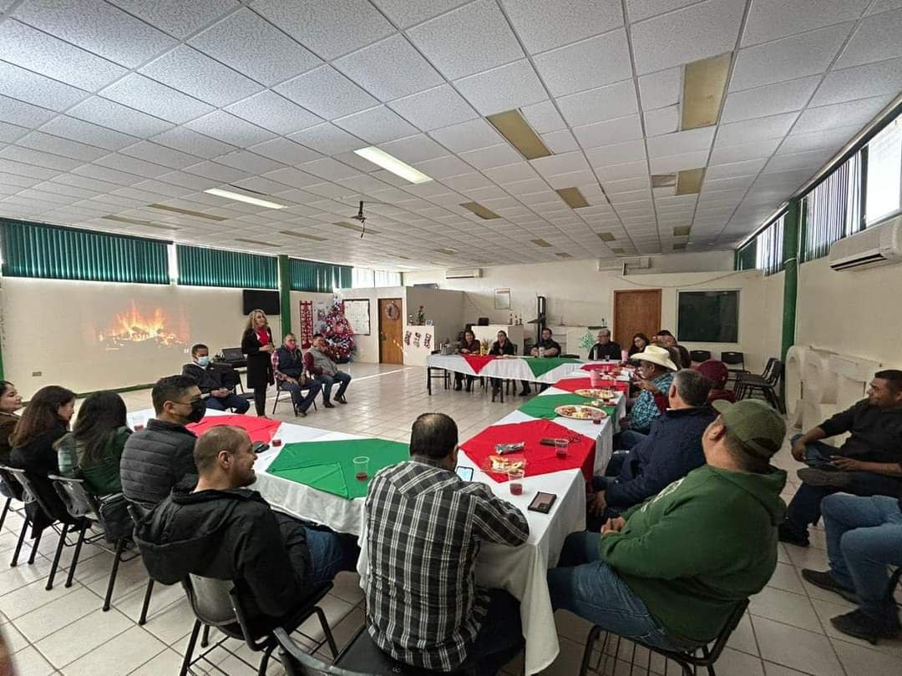

CBTa 38
Bienvenidos al Centro de Bachillerato Tecnológico Agropecuario No. 38 (CBTA 38)
Ubicado en Cd. Obregón, Sonora, México, el CBTA 38 se destaca por ofrecer una educación integral y de alta calidad a sus estudiantes. Nuestro compromiso es formar profesionales competentes y preparados para enfrentar los retos del mercado laboral actual. A continuación, te presentamos los principales servicios educativos que ofrecemos:
### Formación Académica
En el CBTA 38, nos enorgullece contar con un equipo de docentes altamente capacitado y comprometido con la excelencia educativa. Nuestros profesores no solo poseen un profundo conocimiento en sus áreas de especialización, sino que también están dedicados a proporcionar una formación académica óptima y de calidad. Esto asegura que nuestros estudiantes reciban una educación que fomente el pensamiento crítico, la innovación y el desarrollo personal.
### Carreras Técnicas
Reconocemos la importancia de proporcionar a nuestros estudiantes habilidades técnicas que les permitan destacarse en el competitivo mercado laboral. Por ello, ofrecemos una amplia variedad de carreras técnicas con alta demanda. Algunas de las especialidades disponibles en el CBTA 38 incluyen:
- Agropecuaria: Formación integral en prácticas agrícolas y ganaderas.
- Soporte y Mantenimiento de Equipo de Cómputo: Desarrollo de competencias en el mantenimiento y reparación de equipos informáticos.
### Actividades Deportivas y Artísticas
En el CBTA 38, entendemos la importancia de un desarrollo integral que incluya tanto el cuerpo como la mente. Por ello, promovemos diversas actividades deportivas y artísticas para nuestros estudiantes. Ofrecemos una variedad de deportes, tales como:
- Fútbol
- Voleibol
- Baloncesto
En el ámbito artístico, nuestros estudiantes pueden participar en clubes como:
- Danza Folclórica: Rescate y promoción de las tradiciones culturales a través del baile.
- Baile Moderno: Expresión artística y creatividad en movimiento.
### Laboratorios de Informática
La tecnología es una herramienta esencial en la educación moderna. Por eso, en el CBTA 38, proporcionamos a nuestros estudiantes acceso a laboratorios de informática equipados con la última tecnología. Estos espacios están diseñados para desarrollar habilidades en el manejo de equipos y software, preparando a nuestros estudiantes para el mundo digital y tecnológico.
---
Con estos servicios, el CBTA 38 se compromete a ofrecer una educación completa y de calidad que prepara a los estudiantes para enfrentar los desafíos del futuro con confianza y competencia.

Historia
En septiembre de 1974 nació la creación de la educación medio superior con la escuela Centro de Estudios Tecnológicos Agropecuarios (CETA 38) de Marte R. Gómez, Cajeme, Sonora impartiendo sus clases al primer semestre en la escuela primaria 23 de octubre en el turno vespertino con las especialidades de técnico agrícola y técnico de administración de empresas agropecuarias con la asistencia de alumnos de Villa Juárez, Buaysiacobe, Pueblo Yaqui, Quetchehueca, campo 5, campo 16, campo 77, Providencia, Cd. Obregón y por supuesto de aquí Marte R. Gómez y Tobarito.
En enero de 1975, la escuela se trasladó a su nuevo edificio con modernas instalaciones consistentes en oficinas administrativas, biblioteca y cuatro aulas para recibir a los alumnos del primer semestre y a los de recién ingreso de segundo semestre de enero de 1975... Y en proceso de construcción los laboratorios y otras cuatro aulas destinadas para los próximos semestres, el tercero de septiembre de 1975 y el cuarto de enero de 1976, y el avance de la obra continuó hasta llegar a 1978 cuando ya estaban construidos casi la totalidad de los talleres y otras aulas de obra... En esa época había flexibilidades y el alumnado trabajaba en actividades de autoconstrucción y así de esta forma se contaba con un internado que más tarde se redujo a unos tres-cuatro años y posteriormente se le cambió el nombre de CETA 38 a Centro de Bachillerato Tecnológico Agropecuario No. 38 (CBTA 38) de Marte R. Gómez, Cajeme, Sonora.
Esta magna obra fue posible gracias a la disponibilidad, disposición y entusiasmo de los señores Eduardo Figueroa Solís, Héctor Mendívil Espinoza, de la señora Emilia Ruelas Cota, familia Vallejo Corro, familia Ruiz Aguilar, familia Sotelo Romero, familia Ramírez Huerta y otros más. Cabe señalar que para facilitar la obra de permuta de los terrenos para la construcción de la escuela, la familia Jiménez Ruelas proporcionó vía permuta la parcela de su propiedad para facilitar la edificación de la obra.
Los maestros que iniciaron con la labor docente fueron: El director Ing. Catarino Haro Pérez; subdirector prof. Braulio Amado Amado; Pedagogía profa. Nereyda Vallejo Corro; Contraloría CP Mirna Vallejo Corro. y los maestros Humberto Beltrán Astorga, José Pedro Montaño Salas, Marco Ángel Zavala Reyes, Horacio Gutiérrez Peñúñuri, Netzahualcóyotl Pablos Méndez, José Cruz Briones, Manuel de Jesús Zavala Reyes, Humberto Millen Iriarte, Gloria González Bórquez, Antonio Hernández Domínguez, Francisco Martínez Barraza, René Valdez González, José Luis Llerena Villalpando. (y otros que de momento no recuerdo) maestros en su mayoría provenientes del ITSON.

Ubicación
El Centro de Bachillerato Tecnológico Agropecuario No. 38 (CBTA 38), esta ubicado en Cd. Obregón, Sonora,tobarito, calle Chapingo, Centro, 85204 Marte R. Gómez. su ubicacion en una zona rural convierte a este centro de bachillerato la primera o incluso unica opcion para muchos jovenes que desean continuar con sus estudios pero no cuentan con un servicio de bachillerato en su comunidad lo cual los lleva a alojarse en el bachillertao mas cercano a sus hogares el cual es el CBTa 38 para muchos jovenes con ganas de estudiar de comunidades cercanas a el conocido como "El Tobarito"
Servicios
Ofrece una variedad de servicios educativos para sus estudiantes. Algunos de los servicios que proporciona son:
Formación Académica: El CBTA 38 cuenta con un equipo de docentes altamente capacitado y comprometido, lo que garantiza una formación académica óptima y de calidad para los estudiantes.
Carreras Técnicas: Ofrece una amplia variedad de carreras técnicas con alta demanda en el mercado laboral. Algunas de estas carreras pueden incluir áreas como la agropecuaria, sistemas de impresión, y soporte y mantenimiento de equipo de cómputo.
Carreras
Ofrecemos una amplia gama de carreras y programas académicos para preparar a nuestros estudiantes para el éxito en el mundo laboral. Desde lo agropecuario hasta la direccion y control de empresas, tenemos opciones para todos los intereses y habilidades.
Misión y Visión
•MISIÓN: Ofrecer una educación bivalente, de calidad,en el nivel medio superior, a través de una formación integral, social y humanista, centrada en la persona, que sea pertinente y fomente la mentalidad emprendedora formando jóvenes comprometidos con el país, así como brindar servicios de capacitación y asistencia técnica a la sociedad rural.
•VISIÓN: Ofrecer una educación pertinente, incluyente, innovadora e integralmente formativa, que contribuya al desarrollo sustentable del pais y cuyos resultados siguen siendo reconocidos por su calidad
Agradecimiento
Esta magna obra fue posible gracias a la disponibilidad, disposición y entusiasmo de los señores Eduardo Figueroa Solís, Héctor Mendívil Espinoza, de la señora Emilia Ruelas Cota, familia Vallejo Corro, familia Ruiz Aguilar, familia Sotelo Romero, familia Ramírez Huerta y otros más. Cabe señalar que para facilitar la obra de permuta de los terrenos para la construcción de la escuela, la familia Jiménez Ruelas proporcionó vía permuta la parcela de su propiedad para facilitar la edificación de la obra.
Los maestros que iniciaron con la labor docente fueron: El director Ing. Catarino Haro Pérez; subdirector prof. Braulio Amado Amado; Pedagogía profa. Nereyda Vallejo Corro; Contraloría CP Mirna Vallejo Corro. y los maestros Humberto Beltrán Astorga, José Pedro Montaño Salas, Marco Ángel Zavala Reyes, Horacio Gutiérrez Peñúñuri, Netzahualcóyotl Pablos Méndez, José Cruz Briones, Manuel de Jesús Zavala Reyes, Humberto Millen Iriarte, Gloria González Bórquez, Antonio Hernández Domínguez, Francisco Martínez Barraza, René Valdez González, José Luis Llerena Villalpando. (y otros que de momento no recuerdo) maestros en su mayoría provenientes del ITSON.
